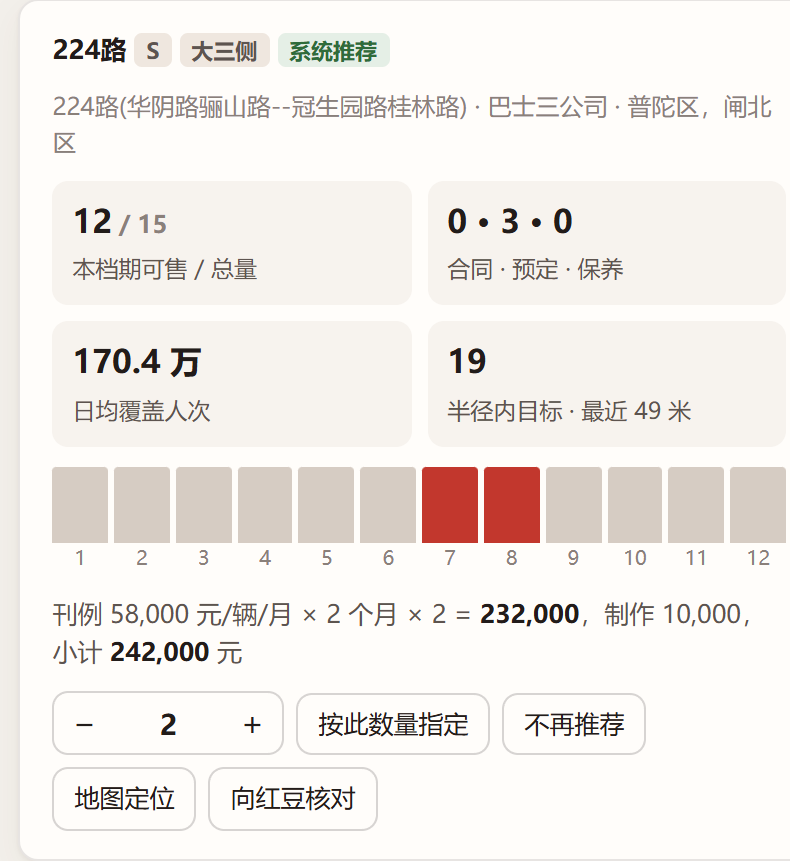

即案 FLASHPLANINTERCITY HACK 湖州场 · AI+办公赛道 · 上海新云传媒命题
即案 FLASHPLAN
当天出案，当场改案
给定行业、预算、媒体和档期，几十秒产出可直接对客户演示的公交 + 地铁口投放方案，每条线路的空位和价格都能在红豆查到。
今天 · 销售人工
好几天查门店附近的线路 → 红豆逐条核空位 → 翻刊例算折扣 → 排上刊 → 做 PPT。慢一步，单子就被竞对拿走。
→
现在 · 工作台
< 60 毫秒重算四步串成一条自动链路。评委改预算、换行业、换档期，方案当场重出，还列出加了哪些线、减了哪些线。
1从品牌到方案的选点链路 每一步都有系统证据
品牌理解
行业 + 头部品牌 + campaign 假设书（七要素）
参考 brief 一键解析门店 / 地址圈选
品牌全部门店，或客户给的具体地址
大数据平台 POI · 地理编码覆盖分析找线路
公交 500 米途经，地铁口 800 米步行
平台线路轨迹 · 日均人次红豆核对可售
整段档期都空才算，已扣合同、预定、保养
红豆库存 · 占用明细预算内择优组案
人次 × 门店相关度，首次覆盖新门店加分
单线 2–5 辆分散覆盖报价、倒排、出提案
刊例口径报价，按夜间施工倒排上刊
单文件 HTML 离线可开942亲子人群锚点（乐园案例）
926半径内自营媒体
834档期内红豆有空位
19500 万预算内入选
2真实地图上看组合 彩色 = 选中线路，悬停变红线

高德底图 + 平台线路轨迹，线宽随缩放变化；灰白 / 彩色底图可切换，终点标线路号，地铁口标 M。
3客户点名线路，数字当场摊开

- 可售拆解：总量 − 合同 − 预定 − 保养 = 本档期空车
- 12 个月可售柱：一眼看出哪个月有车，月份可多选
- 价格算式：刊例 × 月数 × 辆数 + 制作费，键盘直接改数量，超可售即提示
- 向红豆核对：实时查询并列出占用订单。167 路 4–5 月 11 − 2 − 6 = 3，与红豆一致
- 按地址查：只给门店地址，也能列出服务半径内全部线路和出入口
改预算即改案乐园案例 494 万 → 199.9 万
移除985路 −2移除980路 −2移除451路 −2移除576路 −2移除沪南线 −2加量浦东105路 +1
共移除 10 条线、加量 1 条；清单里变化的行标黄。
4按评分标准自检 10 条实时打勾
- 客户与 campaign 一句话说清
- 行业 · 预算 · 媒体 · 档期四项落进方案
- 选点逻辑每步有证据
- 组合有主次，讲得出取舍
- 预算拆分：占比、刊例 × 折扣、制作费
- 排期与红豆可售一致（实时核对后转绿）
- 效果有口径，监测写清
- 误一补二、天气施工、备选替换
- 改预算加减模块，不推倒重来
- HTML 现场可交互
5数据底座
430红豆公交线路
861红豆地铁出入口
12 个月2027 逐月库存快照
1,444平台线路 / 出口人流
5 × 3行业 × 预算回归测试
8 / 8引擎约束测试通过